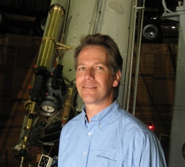

Dr. Gerard van Belle
Astronomer, Lowell Observatory
1400 W Mars Hill Road
Flagstaff, AZ 86001
I'm an astronomer at Lowell Observatory, in Flagstaff, Arizona, building & using
the highest resolution optical telescopes available on the planet.
I use these telescopes to learn about the sizes, shapes,
and surfaces of stars, and to look for planets orbiting those stars.
You can continue on to my detailed professional pages
available here.
Recent Press
- 2025 Jun 13, Looking Up podcast: "Exploring Oddball Stars (with Dr. Gerard van Belle)"
- 2025 Jun 6, Astronomy Magazine: "An evening with the Lowell Discovery Telescope: Deep-sky observing with a 4-meter scope"
- 2025 Apr 9, FOX Weather: "Astronomers say new 'star' due to appear in night sky is 'late to the party'"
- 2025 Apr 8, FOX Weather: "April's full Pink Moon rises as micromoon Saturday"
- 2025 Mar 13, Wall Street Journal: "There's a Blood Moon Rising. How to Watch the Total Lunar Eclipse"
- 2025 Feb 28, New York Times: "A Parade of Planets Is Marching Through the Night Sky"
- 2025 Feb 28, ABC News: "Planetary alignment is coming"
- 2025 Feb 17, Fox Weather: "On 95th anniversary of Pluto discovery, its home observatory celebrates solar system's underdog"
- 2025 Jan 23, Syfy: "Check Out the January 2025 Parade of Planets in the Night Sky"
- 2024 Nov 26, Space Daily: "From space to atmosphere scientists unravel secrets of asteroid 2022 WJ1"
- 2024 Sep, Off-Nominal Podcast: "Episode 165 - Vacuum Light Pipe (with Dr. Gerard van Belle)"
- 2024 Sep, Universe Today with Frasier Cain Podcast: "x1,000 Resolution of JWST But x1,000 Cheaper"
- 2024 Sep 16, Universe Today: "Studying Stars from the Lunar Surface with MoonLITE"
- 2024 Aug 25, Universe Today: "The Big Fringe Telescope"
- 2024 Jul 21, The Interplanetary Podcast: "Nova - Gerard Van Belle"
- 2024 Jul 12, Forbes: "Mysterious Mira Variables Remain A 400-Year-Old Stellar Puzzle"
- 2024 Jul 3, Observatoire de la Côte d'Azur: "2024 Fizeau and Michelson Prize Winners Announced"
- 2024 May 21, Ars Technica: "Nova explosion visible to the naked eye expected any day now"
- 2024 Apr 24, Fox Weather: "What to know about the 'new' star coming to night sky this year"
- 2024 Apr 6, NPR Weekend Edition: "Pluto is a planet again — at least in Arizona"
- 2024 Apr 5, KJZZ 91.5: "These Arizonans never gave up on Pluto. Now it's the state planet"
- 2024 Mar 8, Royal Astronomical Society: "Roadmap to the next-generation infrared interferometric facility"
- 2023 Nov 7, Lowell Observatory Star Stuff Podcast: "A Moving Portrait"
- 2023 Jun 6, Lowell Observatory Star Stuff Podcast: "What Astronomers Do In The Dark"
- 2023 Jan 23, Forbes: "Sun Will Eventually Expand To Some 300 Times Its Current Size, Says Study"
- 2023 Jan 4, Sedona Red Rock News: "Lowell Observatory astronomers help confirm 6 new exoplanets, identify 13 more possible planets"
- 2022 Sep 1, Solve It! for kids: "How Do You Measure the Size and Shape of a Star?"
- 2022 Mar 29, Lowell Observatory Star Stuff Podcast: "The Life of Stars: We Talk to Lowell Astronomer Gerard van Belle"
- 2021 Dec 8, Phys.org: "Giant stars and the ultimate fate of the sun"
- 2021 Jan 29, AZ Daily Sun: "Northern Arizona University Working to Understand even more about Space"
- 2020 Feb 18, Discovery Go: "#TeamPluto"
- 2020 Jan 22, Astronomy: "These are the universe's five strangest stars"
- 2019 Aug 29, WIRED: "How America's Spooks Seek to Spy on Distant Satellites"
- 2019 Apr 15, Nature Astronomy: "An improved stellar yardstick in the shadows"
- 2019 Feb 21, Forbes: "Here's How A National Space Lottery Might Solve NASA's Funding Problems"
- 2018 Oct 25, Astronomy Magazine: "America's Observatory Enters a New Age"
- 2018 Oct 12, Flagstaff Business News: "Giovale Open Deck Observatory Taking Viewers Closer to the Cosmos"
- 2018 Jul 3, Science Magazine: "Telescope array will spy on spy satellites, star surfaces, and black holes"
- 2018 Jun 23, Sigma Chi: "Sigma Chi Fraternity Announces Recipients of its 2018 Significant Sig Award"
- 2018 Jun 9, Ars Technica: "Building the world's highest-resolution telescope"
- 2018 Jun 1, Laser Focus World: "Advances in Test & Measurement: Photonic advances to dramatically improve astronomical interferometry in the next decade"
- 2018 May 31, AZ Daily Sun: "More mirrors make Anderson Mesa telescope near Flagstaff biggest in the world"
- 2018 Mar 2, Astronomy Magazine: "Book highlights Pluto's connection to Lowell Observatory"
- 2018 Jan 28, AZ Central: "Total lunar eclipse, 'super blue blood moon' over Arizona"
- 2017 Nov 2, The Lumberjack: "Conquering fear, one public speech at a time"
- 2017 Oct 19, AZ Daily Sun: "Toastmasters prepare for fall conference"
- 2017 Sep 7, KNAU: "Brain Food: Interferometer Upgrade to Sharpen View of Distant Stars"
- 2017 Sep 6, Madras Pioneer: "Eclipse keeps generating buzz on media"
- 2017 Aug 22, AZ Daily Sun: "Cheers, then quiet at Lowell's Oregon total eclipse event"
- 2017 Aug 18, KNAU: "Total Solar Eclipse Shines Light On Science"
- 2017 Aug 11, Flagstaff Business News "Lowell Observatory Shines in the Shadow of Solar Eclipse"
- 2017 Jul 25, Astronomy Magazine, Dave's Universe blog: "Lowell Observatory's Amazing Anderson Mesa"
- 2017 Jul 15, Lowell Observatory (4min video): Visitor Center video segment
- 2017 May 10, AZ Daily Sun "Telescope work in Flagstaff spans the spectrum"
- 2017 May 8, Lowell Observatory: Lowell Observatory Astronomer Named Director of Telescope Array in Flagstaff
- 2017 Mar 2, AZ Public Media: "Demoted as a Planet, Pluto May Get Another Chance"
- 2017 Mar 1, KNAU (3min audio): "Scientists Renew Debate over Pluto's Planet Status"
- 2016 Dec 27, Sentari and George's "'Figure It Out' podcast", also available on video and iTunes (47min)
- 2016 Apr 12, Spaceflight Insider: "Strange Fractures Seen on Pluto's Surface; Study Considers Feasibility of Orbiter"
- 2016 Apr 9, NEAF Talks (57min video) : "The Pluto Vote: One Astronomer's Personal Story"
- 2016 Feb 15, Lowell Observatory Weekly Whats Up (3min video) : "The Discovery of Gravitational Waves"
- 2016 Feb 1, Astronomy.com podcast (55min audio): "The lives of stars"
- 2016 Jan 22, KJZZ: "Flagstaff Astronomer: Proposed 'Planet Nine' Raises Questions About Planet Definition"
- 2015 Nov 23, Forbes: "Will NASA Ever Send Astronauts To Pluto?"
- 2015 Jul 15, The Guardian: "Flagstaff, the Town that Discovered Pluto, Toasts New Horizons Triumph"
- 2015 Jul 12, AZ Daily Sun: "Pluto Images are Candy for the Eyes"
- 2015 May 7, AZ Daily Sun: "Defending Champs Retain Spelling Bee Title"
- 2015 Apr 3, USA Today: "Pathos for Pluto"
- 2015 Jan 31, AZ Daily Sun: "New Horizons Leader to Speak in Flagstaff"
- 2014 Nov, Whitman Magazine: "Star Tracker"
- 2014 Nov 21, AZ Daily Sun: "Fire in the Sky"
- 2014 Sep, Esquire:A brief fashion appearance
- 2014 Aug, Esquire: Comments onthe "supermoon"
- 2014 May 23, radio appearance onKSFR's Santa Fe Radio Cafe (22min audio)
- 2012 Dec, Forbes:A Lowell "Christmas card"
- 2012 Apr, AZ Daily Sun: "Lowell's Anderson Mesa Looking to Grow"
Other Items of Interest